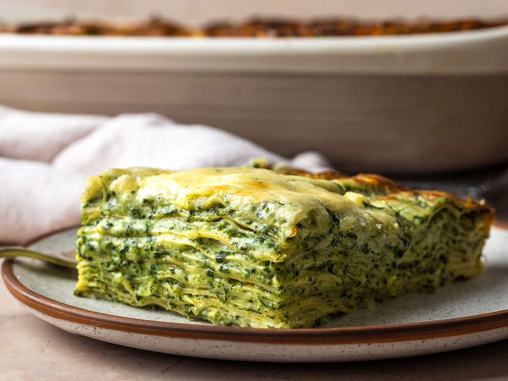

Looking for a delcious healthy recipe? Don't look further!

ingredients
1 Ui
1 Knoflook
1 Tomatenblikje
Mozzarella
Lasagna Noodles
400g Gehakt
Egg
Kruiden!!!
Preperations
Verwarm de oven voor op 175°C. Schil de wortel en snij hem in blokjes.
Pel en snipper de ui. Fruit ze glazig in een scheutje olie. Doe er het
gehakt bij en bak rul. Voeg er de tomaten- en de wortelblokjes aan toe.
Kruid met de laurier, peper en zout. Dek af en laat 15 minuten stoven.
Spoel de spinazie. Laat uitlekken in een vergiet en druk nog eens extra
goed uit. Stoof heel kort aan in een beetje olijfolie. Pel en pers de
knoflook en meng met de spinazie en de peterselie. Kruid met
nootmuskaat, peper en zout.
Vet een ovenschaal lichtjes in met olijfolie. Leg er als eerste laag een
lasagnevel in en doe daarop een laagje gehaktmengsel. Bedek met een
lasagnevel en leg daarop een laagje spinazie. Herhaal tot alle
ingrediënten opgebruikt zijn. Eindig met een laagje spinazie.
Laat de mozzarella uitlekken en snij hem in fijne plakjes. Leg ze op de
spinazie. Kruid met peper en zout. Zet de ovenschaal 35 minuten in de
oven.